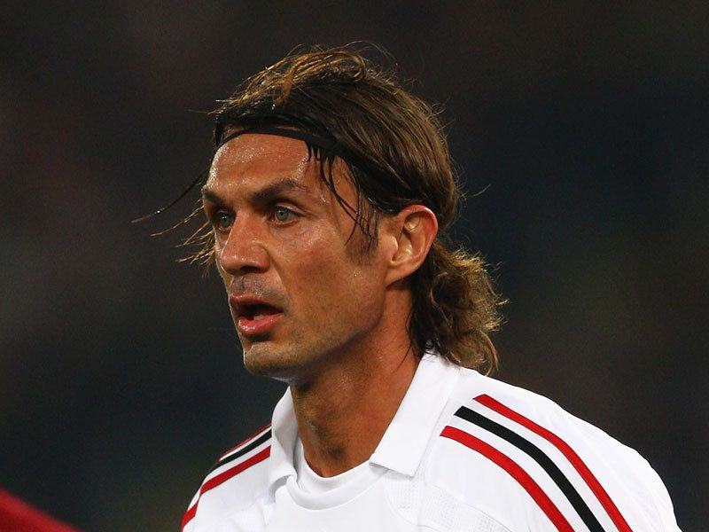
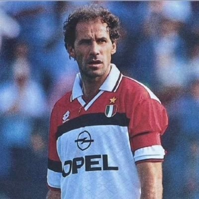
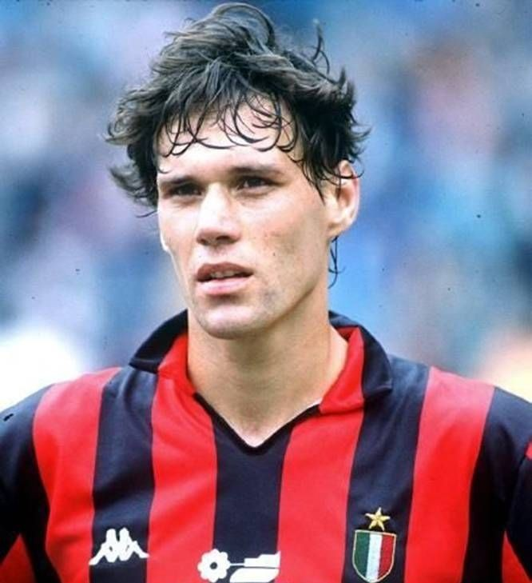

Legendák
Paolo Maldini (balhátvéd/középhátvéd)

902 lejátszott mérkőzés (klubrekord). Az AC Milan ikonikus kapitánya, a klubnál töltött 25 szezont. 5 Bajnokok Ligája és 7 Scudetto győztese.
Franco Baresi (középhátvéd)
719 lejátszott mérkőzés. Maldini elődje a védelemben és kapitány. A "Piedone" (Nagylábú) becenevű, elegáns védő az 1980-as és 1990-es évek Milan-védelmének alapköve volt. A klub 6-os mezszámát visszavonultatták tiszteletére.

Marco van Basten (támadó)

Háromszoros Aranylabdás (1988, 1989, 1992). Az Arrigo Sacchi-féle Milan kulcsfigurája. Karrierjét sérülések rövidítették meg.
További ikonikus alakok
- Gunnar Nordahl (támadó): 268 meccs, 221 gól a Milanban. A Serie A történetének egyik leghatékonyabb góllövője, ötszörös Serie A gólkirály. A Gre-No-Li trió tagja.
- Gianni Rivera (középpályás): Az "Arany Fiú", a klub első Aranylabdása (1969). A Milan színeiben 658 mérkőzésen lépett pályára. Kiváló technikájú, intelligens irányító volt.
- Carlo Ancelotti (edző): Irányításával a Milan 2003-ban és 2007-ben nyert Bajnokok Ligáját. Először játékosként, majd edzőként is meghatározó figurája volt a klubnak.